Marcos Carvalho
Criatividadeé juntarpontos.
O punk e o faça você mesmo me fizeram designer.
Quatorze anos desenhando produtos digitais. Hoje comando a CEROL, minha empresa de design e consultoria de design e experiência, e a LERDO, minha marca de roupa.

- 2011 – 13Mirum · JWTUI Designer. Coca-Cola, Johnson & Johnson, HSBC, Caixa, Magazine Luiza.
- 2013 – 16Break Even StudioProduct Designer e cofundador.
- 2015Huge · Brooklyn, NYUX Designer na UX School. Fast Company, intranet mundial.
- 2016 – 18TASTESócio e UX/UI Designer Lead.
- 2018 – hojeCEROLFundador e Design Director. Produto, marca e arte. VOID, Evil Apples, Bodebrown, Lerdo.
- 2019 – 21MarketdataSenior Product Designer. Nissan, Renault, Óticas Carol, Riachuelo.
- 2021 – 22Leads2bProduct Design Lead. SaaS B2B de vendas.
- 2022Remessa OnlineProduct Design Lead no time de Growth. Fintech de câmbio.
- 2024 – 26SolvefyStaff Product Designer e Product Design Lead. CPaaS, Ads, Cloud e Agents.
Antes de 2011, tudo isso.
-
01Biblioteca particular
Refiz e cataloguei uma biblioteca de uns 3.500 livros. Meu primeiro trabalho.
-
02SAC de internet
Já em Curitiba, atendia quem ligava irritado querendo resolver a internet.
-
03Estágio no Sebrae
Um ano organizando os jornais do dia e a comunicação interna na intranet.
-
04Estúdio de fotografia
Fotografia de festas de 15 anos e de casamentos.
-
05Agência de 4 pessoas
Minha primeira agência. Fazia papel de diretor de arte, mas era estagiário.
-
06Arte-final, estágio
Apareceu a chance de virar arte-finalista, ainda como estagiário.
-
07Arte-final e ilustração
Contratado como arte-finalista, comecei a ilustrar para campanhas que iam sair.
-
08Na revista Archive
A primeira ilustração que fiz para campanha saiu na Archive. Ali viram um diretor de arte.
-
09Diretor de arte
Mais uma agência, agora como diretor de arte. Vieram aumento e alguns prêmios.
-
102011 · o digital
Entrei de assistente no projeto da Porto Seguro, assumi até o fim e virei UX/UI designer.
Da pesquisa ao sistema no ar.
Nissan
Customer Care Panel.
Um painel de atendimento que juntou o histórico e os dados do cliente, antes espalhados em várias telas, num produto só.
Solvefy
De empresa de comunicação a ecossistema de tecnologia.
Uma empresa com duas décadas de história, renascida como ecossistema de tecnologia. Fiquei à frente de design e growth durante toda a mudança.
Marcas, vestuário, capas de disco.
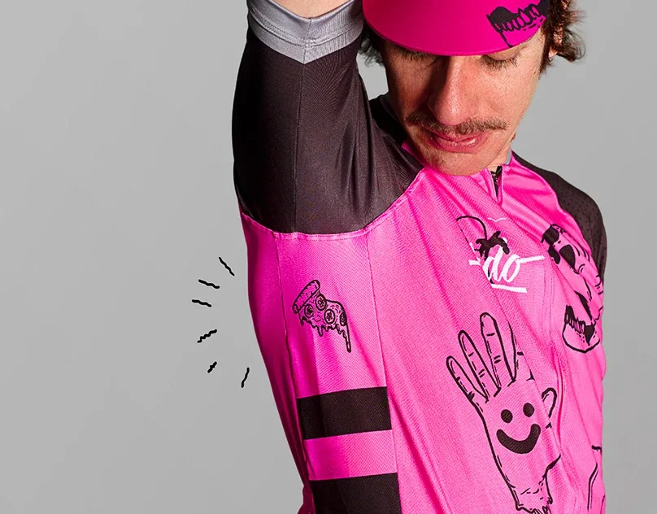
Lerdo · pink neonFundador · Vestuário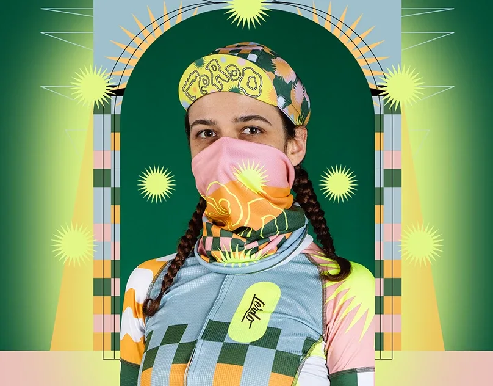
VertigemCamisa de ciclismo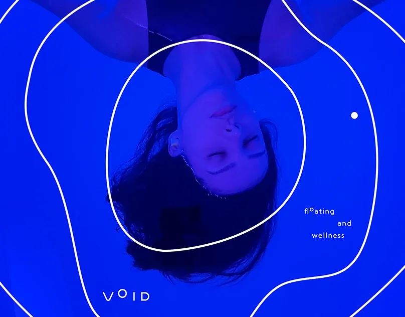
void · floating spaMarca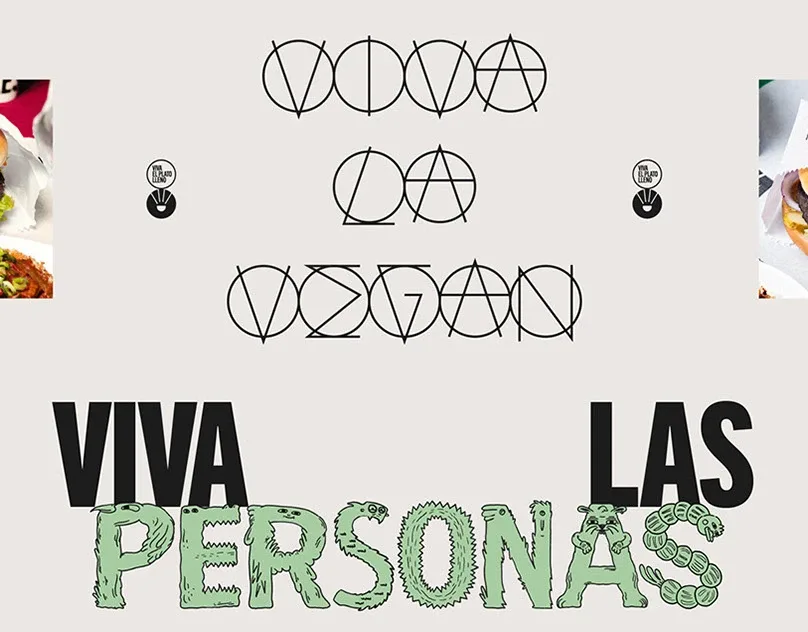
viva la veganMarca · Editorial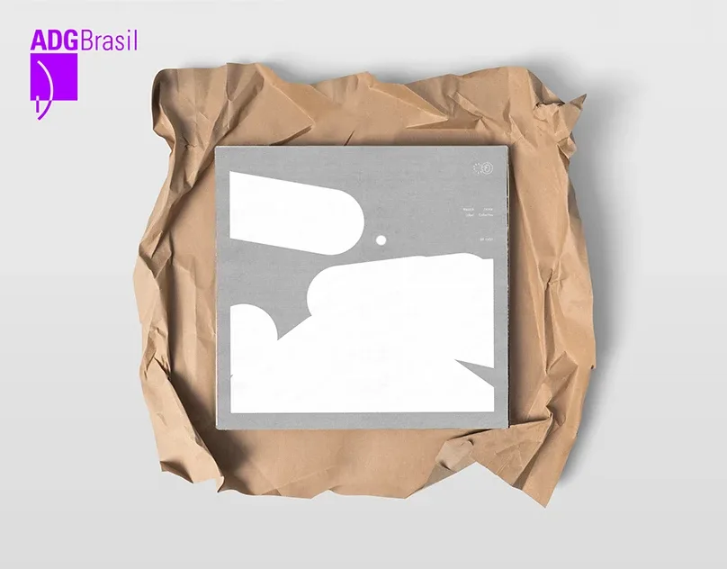
Feel.USelo de música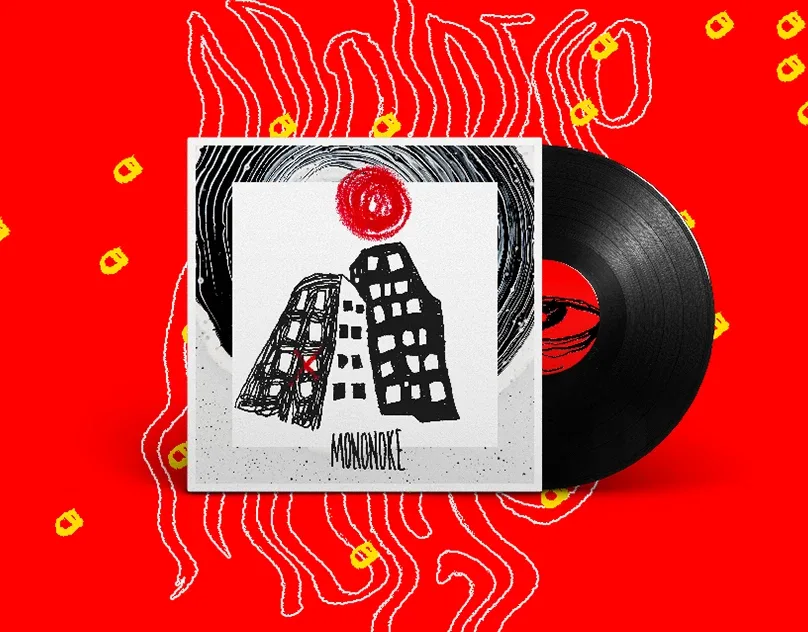
Mononoke · ProgressoCapa · Clipe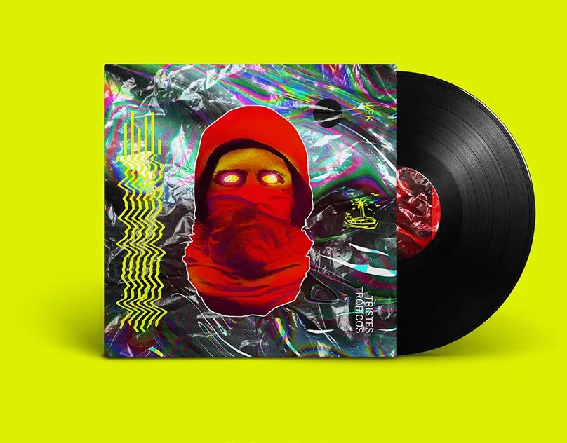
Tristes TrópicosCapa e arte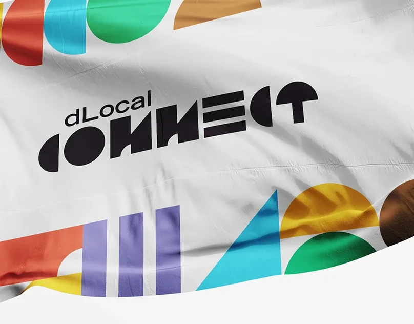
dLocal · CONNECTEvento global · MarcadLocal CONNECT
Um logo estruturado que se desmonta em malha gráfica.
O evento mundial da dLocal, empresa global de pagamentos, sobre acesso a pagamentos na África, na Ásia e na América Latina.
kel
Capas abertas camada por camada.
O vídeo case das capas que desenho para o kel desde 2021, a partir de Tristes Trópicos.
Antes de juntar, é preciso ter pontos.
Estes são os meus.
FFFFOUND!
Um site de guardar imagem. Só entrava por convite, e o que cada um guardava puxava o próximo achado.
Lürzer's Archive
A revista alemã de publicidade. Campanha do mundo inteiro, página por página.
Livros que me ajudam a pensar.


Abstract e Alexandre Wollner.
Paula Scher no Abstract, da Netflix, e a formação do design moderno no Brasil.
Do Sonic ao The Last of Us.
De Mr. Robot a Esqueceram de Mim.
A TV e o consumo de tela não era só o que a gente queria, e isso era ótimo.
Página também é interface.
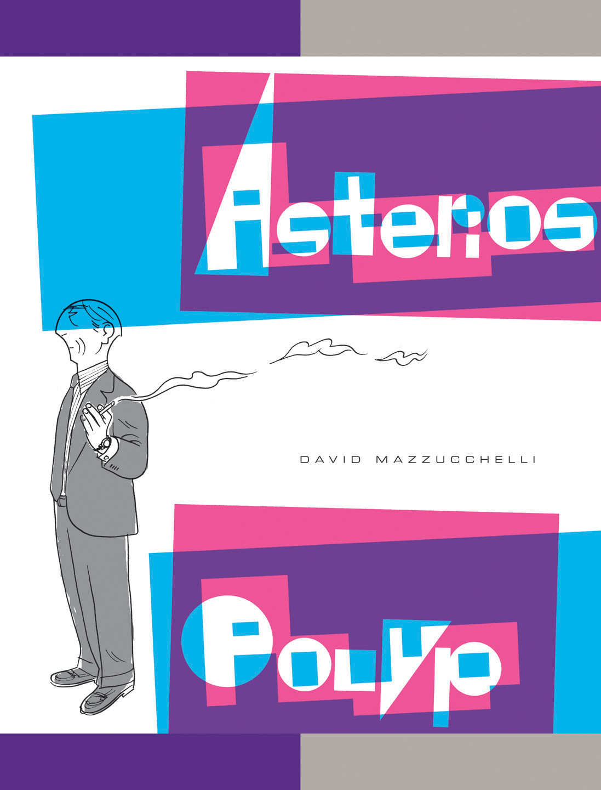
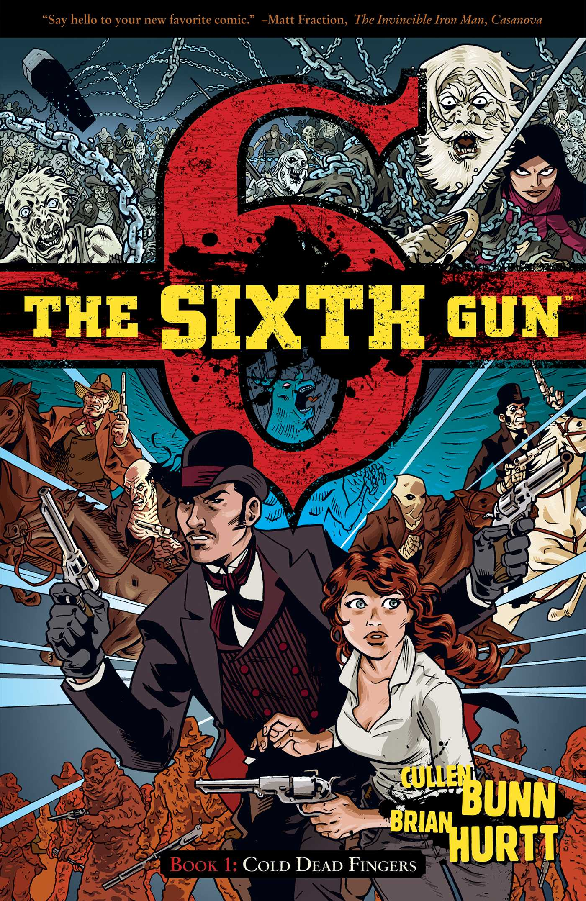
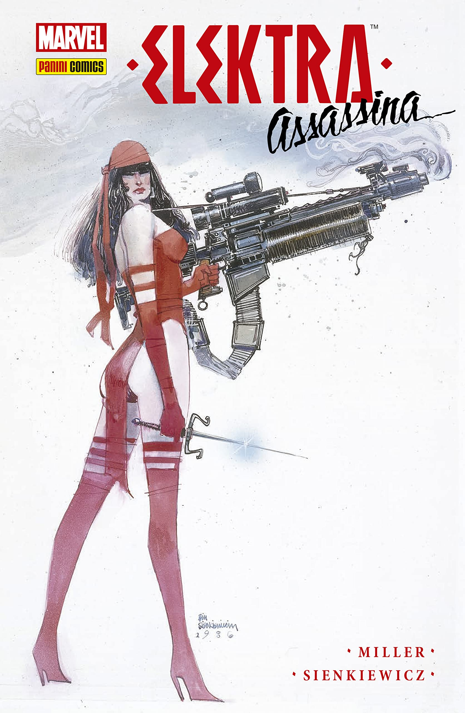
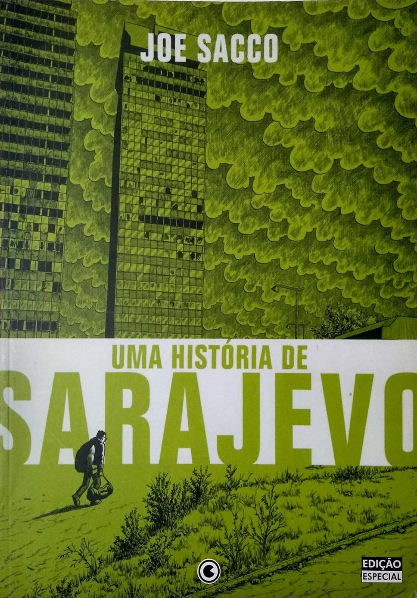

MTV, anos 90 e 2000.
Vinheta, abertura e clipe. Cada intervalo era um estúdio de design diferente.
Punk e straight edge, anos 90 e 2000.
Sepultura, Pantera, Metallica.
King Gizzard & The Lizard Wizard.
IA não vai saber trazer referências do que você não tiver vivência.
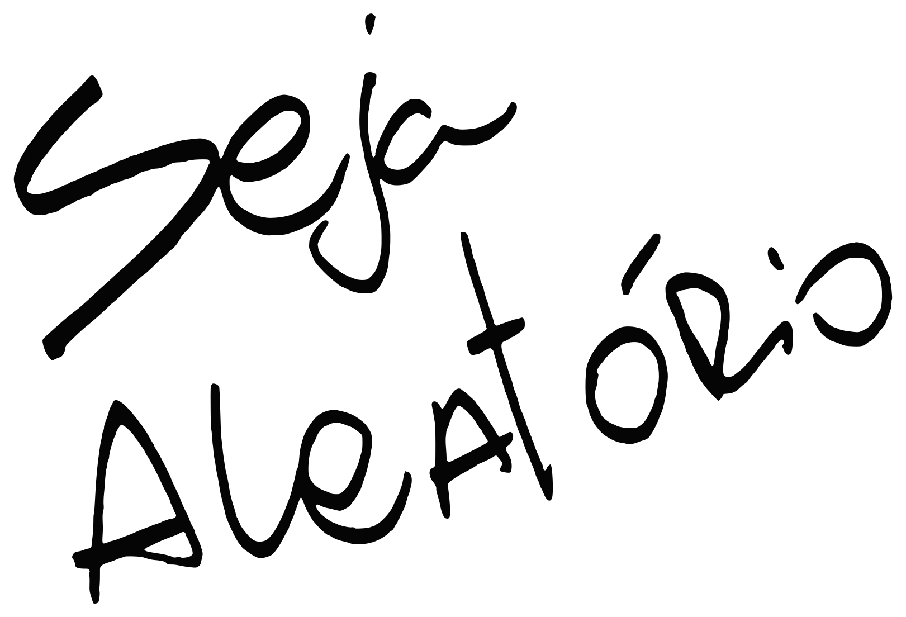
O algoritmo quer te prender na caixinha.
Como estou construindo com IA.
LERDO
Sistema de e-commerce, organização e growth.
A plataforma que desenhei e construí para a LERDO, minha marca de roupa: loja, estoque, expedição, atendimento e pesquisa num lugar só.
Radar de Vagas
Aplicar é fácil. Aplicar bem é raro.
Uma rotina de busca de emprego que roda no seu computador, dá nota a cada vaga com base na sua experiência real e para em cada decisão para você escolher.
- VarreVagas novas, todo dia.
- PontuaDe 0 a 100 contra a sua experiência.
- AprofundaEmpresa, salário, um CV para a vaga.
- DecideUm clique, num painel local.
Decomposer
Cole uma música. A gente desmonta em camadas.
Mostra o estilo, as camadas mínimas, o arranjo e como refazer o som só com o que já vem no Ableton Live.
- ColaUm link do YouTube, Spotify, SoundCloud ou Bandcamp.
- DesmontaAs camadas mínimas, cada uma na sua faixa.
- RefazPasso a passo, só com o Ableton Live.
- GuardaCada música entra num espectro compartilhado.
Análise de Espaço
Um raio-x do seu Mac.
Descobre o que ocupa espaço sem uso, confere se o Dropbox está saudável e limpa só o que você aprovar, item a item.
- AnalisaSó lê. Nada é apagado.
- MostraCaches, apps parados, restos e espaço escondido.
- PerguntaCada item espera o seu ok.
- LimpaSó o que você aprovou.
- 01Radar de VagasVarre, pontua e aprofunda cada vaga. Quem decide sou eu.
- 02Pesquisa de tendênciaO que mudou em design e IA vira rascunho para eu revisar.
- 03Absorver referênciaUm site que eu admiro, desmontado em código, movimento e tokens.
- 04Design systemNove fases, da definição ao componente, com parada para eu aprovar.
- 05Vídeo caseRoteiro, telas, narração e render, tudo feito em código.
- 06Imagem, vídeo e 3DDo rascunho à peça pronta para revisão.
Nada sai sem o meu ok.